科技日报 | 2026-10-22
2026 年 10 月 22 日 周三 · GitHub Trending + Hacker News
今日关键词：PHP 安全、证书信任崩溃、CSS 未来、供应链投毒、DuckDB 2.0。
今天 HN 被安全话题刷屏：PHP 一次性修补两个关键 RCE，eMudhra 的 CA 私钥因为生成缺陷被毫秒级破解，PyPI 上的 LiteLLM 被植入后门。三条新闻共同指向一件事——基础设施的信任链正在连续遭受压力测试。
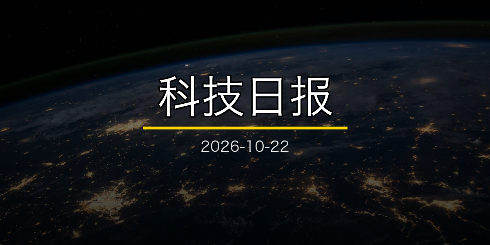
一、GitHub Trending 今日热门 TOP 10
数据截至 2026-10-22 上午，按"今日新增 Star"排序。
1. cloudflare/security-audit-skill —— 让 Agent 做安全审计
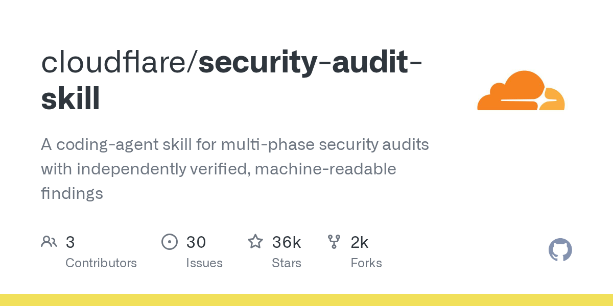
🏷️ 基本信息
- 语言：JavaScript
- 总 Star：36,471
- 今日新增：+2,012
- 地址：https://github.com/cloudflare/security-audit-skill
📖 项目介绍
Cloudflare 开源的 coding-agent skill，用于多阶段安全审计，输出独立可验证、机器可读的安全发现。
✨ 技术亮点
- 多阶段审计流程，强调"独立验证"；
- 输出结构化发现，而不是泛泛的文本建议；
- 直接面向生产代码库设计。
🎯 适合场景
需要在 CI/CD 或本地引入自动化安全审查的团队。
📚 学习价值
安全审计是 Agent 的高风险场景：漏报会留下隐患，误报会浪费人力。这个项目的价值在于把审计过程结构化，而不是把安全责任完全交给黑盒模型。
2. DietrichGebert/ponytail —— 让 AI 像"最懒的高级工程师"一样写代码
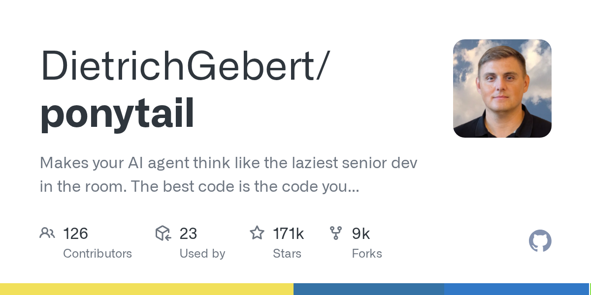
🏷️ 基本信息
- 语言：JavaScript
- 总 Star：171,628
- 今日新增：+2,079
- 地址：https://github.com/DietrichGebert/ponytail
📖 项目介绍
一个让 AI Agent "像最懒的高级工程师一样思考"的框架：不炫技、不堆砌，优先不写不必要的代码。
✨ 技术亮点
- 通过 Prompt 和工具约束引导 Agent 做最小改动；
- 强调"最好的代码是你没写的代码"；
- 适合已经厌恶"过度工程"的团队。
🎯 适合场景
代码库膨胀、Agent 改动频频引入新依赖的项目。
📚 学习价值
Agent 生成代码的一个隐藏风险是"积极贡献"：它为了显得有用，会不断加东西。Ponytail 试图反向约束——少即是多。
3. stablyai/orca —— 管理一支 Agent 舰队
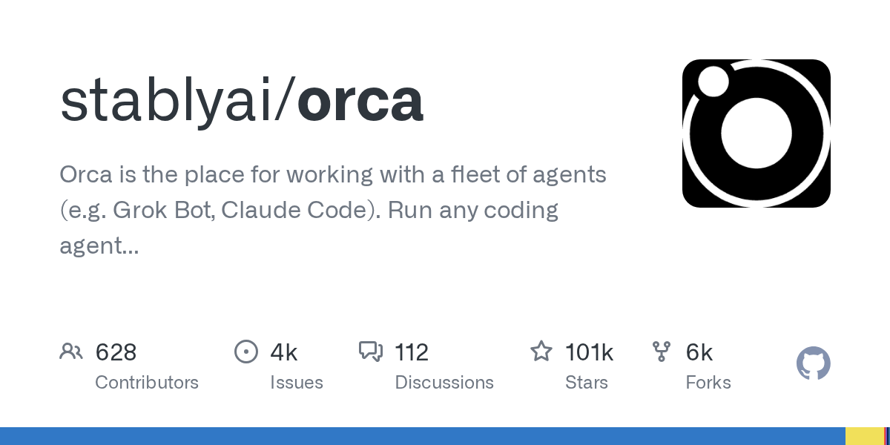
🏷️ 基本信息
- 语言：TypeScript
- 总 Star：101,246
- 今日新增：+1,541
- 地址：https://github.com/stablyai/orca
📖 项目介绍
多 Agent 工作台：可以用自己的订阅运行任意编码 Agent（如 Grok Bot、Claude Code），统一管理一组并行工作的智能体。
✨ 技术亮点
- 多 Agent 并行，而不是一次只开一个会话；
- 支持自带订阅，不必绑定某一家 API；
- 把"派活、观察、收结果"做成统一界面。
🎯 适合场景
同时推进多个任务的重度用户、需要并行探索方案的小团队。
📚 学习价值
当 Agent 从"一个助手"变成"一组 worker"，你需要的是一个调度台，而不是更大的聊天窗口。
4. Graphify-Labs/graphify —— 把整个代码库变成知识图谱
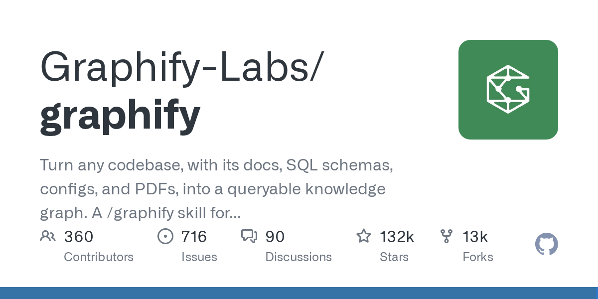
🏷️ 基本信息
- 语言：Python
- 总 Star：131,633
- 今日新增：+1,433
- 地址：https://github.com/Graphify-Labs/graphify
📖 项目介绍
把任意代码库、文档、SQL schema、配置文件、PDF 转成可查询的知识图谱，并作为 skill 接入 Claude Code、Cursor、Codex、Gemini CLI。
✨ 技术亮点
- 不是简单 RAG，而是结构化的跨源关系抽取；
- 支持代码、文档、数据库 schema 的统一建模；
- 以 skill 形式嵌入现有编码 Agent。
🎯 适合场景
大型遗留系统、跨多个仓库和文档的复杂项目。
📚 学习价值
Agent 要改好代码，先得"看懂"代码。Graphify 的赌注是：结构化的关系图比扁平的向量检索更接近人类工程师的理解方式。
5. Comfy-Org/ComfyUI —— 节点式扩散模型工作台
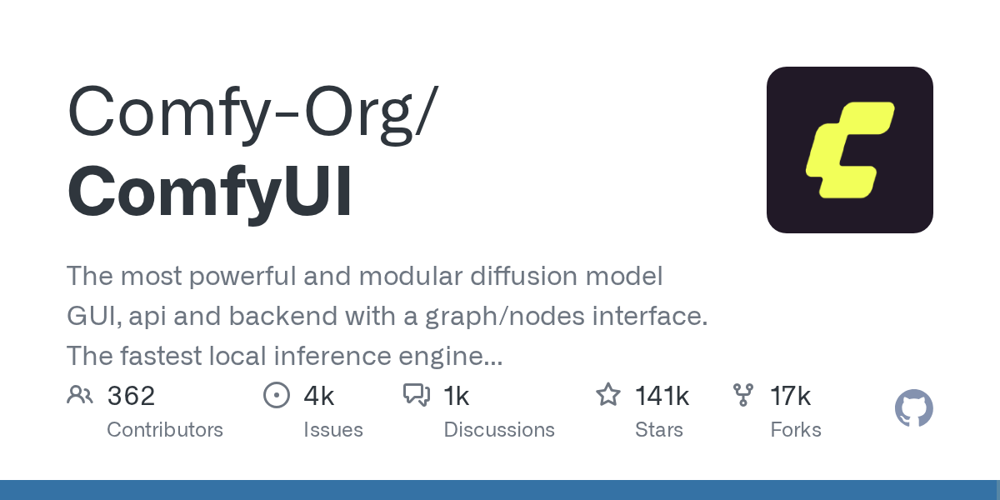
🏷️ 基本信息
- 语言：Python
- 总 Star：141,515
- 今日新增：+939
- 地址：https://github.com/Comfy-Org/ComfyUI
📖 项目介绍
最强大的模块化扩散模型 GUI / API / 后端之一：用图和节点组织生成流程，图片、视频、音频都能接。
✨ 技术亮点
- 节点式编排，复杂流程可视化；
- 前后端分离，可作为 API 后端使用；
- 社区节点生态庞大，新模型接入快。
🎯 适合场景
需要精细控制生成流程的创作者、搭建生成式 AI 服务的团队。
📚 学习价值
它是"工作流即程序"的典型样本：当模型能力被封装成节点，创意工作就变成了连线和调参。这也是一种新的编程范式。
6. supabase/supabase —— Postgres 开发平台
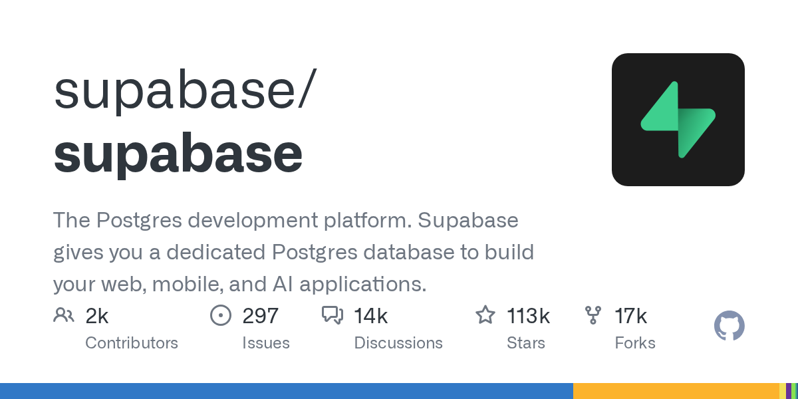
🏷️ 基本信息
- 语言：TypeScript
- 总 Star：113,000
- 今日新增：+504
- 地址：https://github.com/supabase/supabase
📖 项目介绍
一个围绕 PostgreSQL 构建的开发平台，提供数据库、认证、实时订阅、存储、边缘函数等后端能力。
✨ 技术亮点
- 开源 Firebase 替代方案，核心基于 Postgres；
- 支持行级安全、实时订阅、自动生成的 REST/GraphQL API；
- 可自托管，也可使用托管服务。
🎯 适合场景
不想被云厂商后端锁定的中小团队、需要 Postgres 但又不想自己搭全栈后端的开发者。
📚 学习价值
Supabase 的长红说明：开发者对"开源 + Postgres + 不绑定"的需求一直很稳。它不是在追逐新范式，而是在把成熟数据库的能力产品化。
7. headroomlabs-ai/headroom —— 给上下文"瘦身"
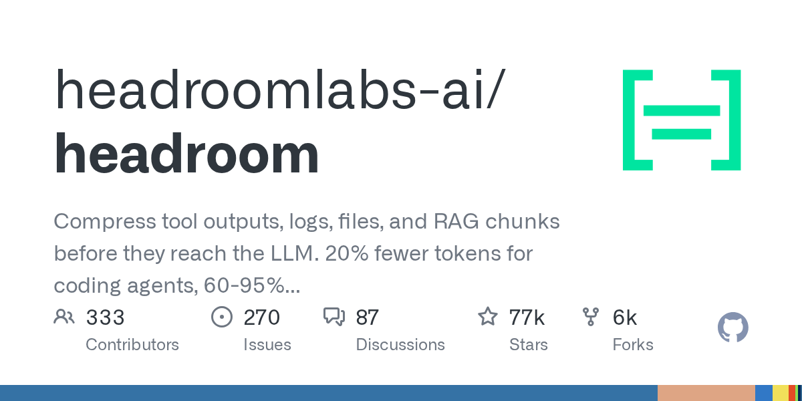
🏷️ 基本信息
- 语言：Python
- 总 Star：77,252
- 今日新增：+474
- 地址：https://github.com/headroomlabs-ai/headroom
📖 项目介绍
在工具输出、日志、文件和 RAG 分块进入 LLM 之前先做压缩，官方称可减少约 20% 的 token。
✨ 技术亮点
- 在"喂给模型之前"做压缩，而不是事后截断；
- 覆盖工具输出、日志、文件、RAG 多个来源；
- 直接打到 Agent 最贵的成本项。
🎯 适合场景
工具调用密集的 Agent、长日志分析、RAG 成本敏感的应用。
📚 学习价值
Agent 的成本大头往往不是推理，而是反复搬运的上下文。压缩层的价值，会随着 Agent 变复杂而上升。
8. shiyu-coder/Kronos —— 金融市场的"语言模型"
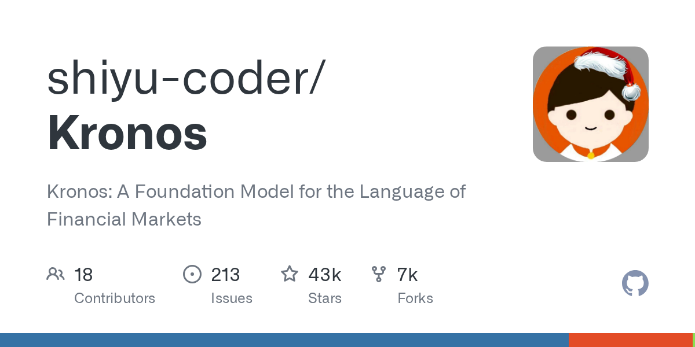
🏷️ 基本信息
- 语言：Python
- 总 Star：42,825
- 今日新增：+575
- 地址：https://github.com/shiyu-coder/Kronos
📖 项目介绍
Kronos：一个面向金融市场的 foundation model，把 K 线等市场数据当作一种"语言"来建模。
✨ 技术亮点
- 专门针对金融时间序列设计；
- 以基础模型的方式统一多种市场任务；
- 开源，可复现实验。
🎯 适合场景
量化研究、金融时序预测的教学与实验。
📚 学习价值
把领域数据"语言化"是这两年的通用套路。但也要记住：金融数据的信噪比极低，回测漂亮不等于能赚钱。
9. vllm-project/vllm —— LLM 推理与服务引擎
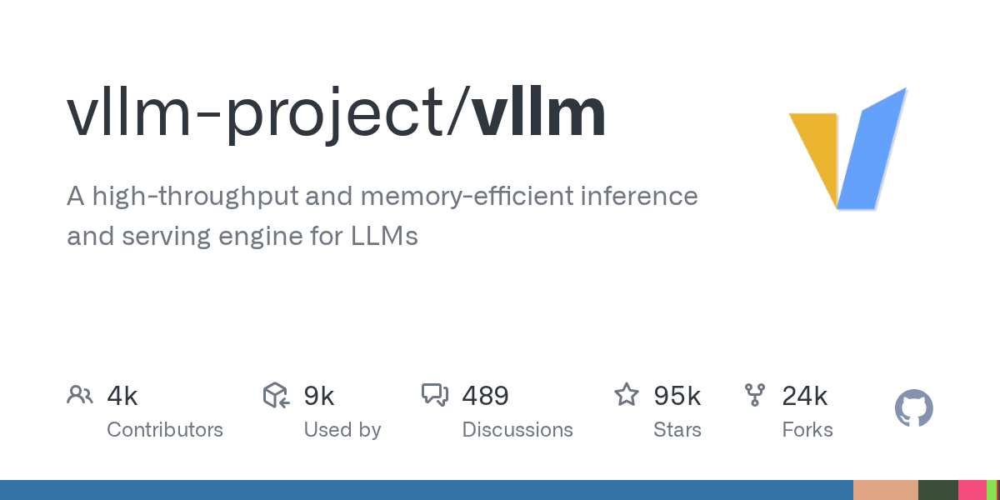
🏷️ 基本信息
- 语言：Python
- 总 Star：94,863
- 今日新增：+441
- 地址：https://github.com/vllm-project/vllm
📖 项目介绍
一个高吞吐、内存高效的 LLM 推理和服务引擎，被广泛应用于生产环境的模型部署。
✨ 技术亮点
- PagedAttention 减少 KV Cache 内存浪费；
- 支持连续批处理、张量并行、流水线并行；
- 与 Hugging Face、OpenAI API 兼容。
🎯 适合场景
需要自建 LLM 推理服务的团队，尤其是高并发、低延迟场景。
📚 学习价值
vLLM 几乎是开源 LLM 部署的事实标准之一。理解它，比理解某个新模型更能帮你把模型真正跑起来。
10. strelov1/freehire —— 求职者的开源搜索引擎
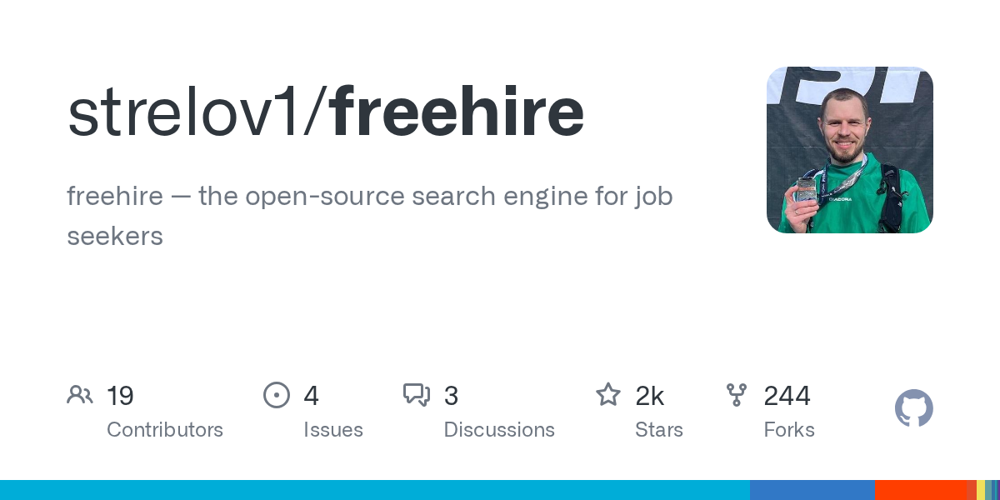
🏷️ 基本信息
- 语言：Go
- 总 Star：2,382
- 今日新增：+360
- 地址：https://github.com/strelov1/freehire
📖 项目介绍
一个面向求职者的开源职位搜索引擎，用 Go 写成。
✨ 技术亮点
- 开源、可自托管，数据可控；
- 轻量、快速，适合作为垂直搜索的原型；
- 与前几周热门的 ai-job-search 不同，它更偏向"搜索"而非"Agent 代理"。
🎯 适合场景
想自己掌控求职信息源、不愿意被招聘平台算法支配的开发者。
📚 学习价值
求职是高频需求，但大多数解决方案要么太重（企业 ATS），要么太黑盒（招聘 App）。freehire 代表另一种思路：把信息抓取和筛选权还给用户。
二、Hacker News 今日热榜 TOP 10
统计窗口：北京时间 2026-10-22 00:00 至发稿时，按 points 排序并去重。
1️⃣ PHP 一天连发四个安全版本，AI 还发现了一个更老的 RCE
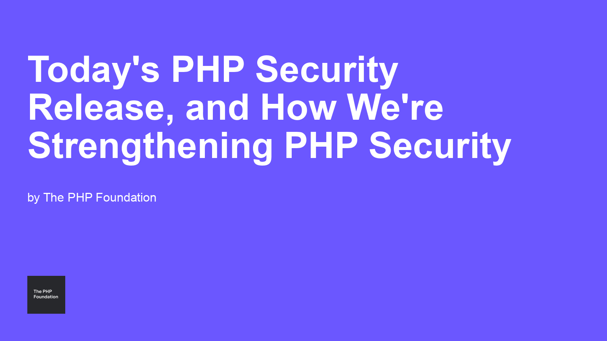
PHP 基金会一次性发布了 8.5.12、8.4.27、8.3.36、8.2.35 四个安全版本，修复了两个关键 RCE 漏洞：
- CVE-2026-109618：OOM 损坏导致的 RCE；
- CVE-2026-109619：全局状态过期导致的 RCE。
基金会同时承认，这次披露过程曾因信息泄露而被打乱，并宣布将加强安全团队、引入 AI 工具、通过 Calif 和 OpenAI 进行审计。
同一天，Wiz 发布 PHP2Shell 研究：他们用 AI 发现了一个存在于 PHP 核心引擎中超过十年的未认证 RCE。漏洞根源是致命错误处理中的 use-after-free 和类型混淆，影响版本从 5.4 开始。Wiz 的核心结论是：这类长期存在的架构弱点，正在因为 AI 降低漏洞利用门槛，从"理论上危险"变成"实际上大规模可利用"。
这意味着两件事：PHP 生态必须加速现代化安全流程；同时，AI 正在成为攻击者和防御者的共同加速器。
2️⃣ eMudhra 的 CA 私钥被毫秒级破解：问题比昨天更严重
昨天我们报道了 eMudhra 中间 CA 私钥泄露。今天 Scott Helme 的分析让事件进一步升级：这些 P-384 私钥不是被"窃取"，而是被直接猜出来——因为它们的私钥值是单字节数字（比如 4、56），可以在毫秒级暴力破解。
也就是说，这不是一次高级入侵，而是一次生成层面的低级错误。更麻烦的是：
- 主流浏览器可以通过 CRL 和 Certificate Transparency 拦截；
- 但 curl、Python、IoT 设备、旧系统等非浏览器客户端，因为 CA 包更新慢、不做吊销检查，仍然可能信任伪造证书；
- 某些旧系统直到 2039 年都可能继续信任这些证书。
结论：Web PKI 的信任链再次证明，它的安全取决于最弱的一环。而这一次，弱环是"私钥生成器"。
3️⃣ 巴黎协定 1.5°C 目标已不可行
联合国环境规划署（UNEP）发布 2026 年排放差距报告，正式宣布：
"以'无或有限过冲'方式弥合 1.5°C 排放差距的机会已经失去。"
新目标变成：先把升温控制在 2°C 以下，再在本世纪末回到 1.5°C。需要到 2030 年减排 18%（相对 2025），到 2040 年减排 69%。但按当前各国的计划，到 2030 年只能减排 5–8%。
对技术行业来说，这条新闻的直接影响是：碳核算、绿色计算、能效优化将从"社会责任"变成"硬约束"。数据中心、AI 训练、芯片制造的能耗，未来会越来越容易被监管和资本市场盯上。
4️⃣ CSS 的未来：Interop 2027 想让你少写点 JavaScript
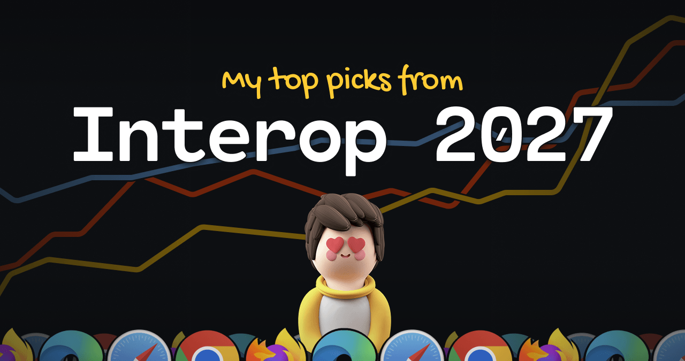
Josh Comeau 梳理了 Interop 2027 正在推进的 CSS 新特性，目标是让浏览器厂商协同实现，最终减少开发者对 JavaScript 的依赖。重点包括：
corner-shape/border-shape：更灵活的圆角和形状；anchor()和 anchored container queries：原生锚点定位；inherit()：更可控的继承；- scroll-triggered animations、scroll state container queries：滚动驱动动画；
interpolate-size、gap decorations、reading-flow等。
如果这批特性真的跨浏览器落地，很多现在要靠 JS 或复杂 hack 实现的交互，会变成几行 CSS。
5️⃣ EA 正式关闭 BioWare
EA 宣布关闭 BioWare，裁员约 400 人，其中 50 人是工作室员工。正在开发的下一部《质量效应》被取消。
EA 给出的解释是"战略转型"，未来会把资源投向 Respawn、DICE、EA Sports、The Sims 和漫威/星战 IP。BioWare 剩下的员工将并入其他团队。
对玩家来说，这意味着一个时代的结束：《博德之门》《无冬之夜》《质量效应》《龙腾世纪》这些作品背后的工作室，最终也没逃过被母公司拆散的命运。
6️⃣ Meta 下架 No Kings 账号：平台即扩音器
上周末，"No Kings" 抗议活动的 Instagram 账号被 Meta 短暂下架，引发轩然大波。Techdirt 的评论标题很直接：不要从 Zuckerberg 那里租扩音器。
这件事的核心不是某一方的政治立场，而是平台权力问题：当绝大多数公共讨论发生在少数几家私营平台上，这些平台随时可以决定谁有发言权——无论理由是"误操作"还是"违反政策"。
对组织者和普通用户来说，这是一个持续 reminder：私有平台不是公共广场，账号可以随时被收回。
7️⃣ PyPI 上的 LiteLLM 被植入后门

SafeDep 发现 LiteLLM 1.107.0 的 PyPI 包被投毒。攻击者在安装时植入：
cook.py和sitecustomize.py，每次 Python 启动时运行；- 窃取 SSH 密钥、云凭证、AI token；
- 数据发送到
www.litellm[.]dev（注意是伪装域名）； - 后台守护进程每小时下载远程代码执行。
更可疑的是，这个 PyPI 版本与任何公开 commit 都对不上，说明发布管道本身可能被入侵。
对 AI 开发者的提醒：LLM 工具链现在成了高价值目标，任何中间层（LiteLLM、LangChain、向量库）一旦被攻破，都可能成为窃取 API key 和训练数据的入口。
8️⃣ Meta Muse：分享对话时泄露他人秘密
Meta 的 AI 产品 Muse 的"分享对话"功能被发现严重隐私问题：研究人员找到了 6800 多个可公开访问的分享链接，这些链接不仅暴露了对话内容，还泄露了用户的个人和商业秘密。
Meta 已暂停该分享功能并展开调查。
这件事和 LiteLLM 后门一起，构成了今天 AI 安全的主旋律：AI 产品的新功能上线速度，正在超过安全审查的深度。分享、代理、工具调用——每一个新能力，都是新的攻击面。
9️⃣ DuckDB 2.0.0 LTS 发布

DuckDB 发布 2.0.0 LTS，代号 "Cinnamon Teal"，承诺支持到 2027 年 10 月。核心更新包括：
- 异步 I/O；
- 原生
VARIANT类型； - SQL 触发器；
- 可扩展的 PEG 解析器；
- server 模式（Quack 协议）；
- CLI agent 模式，方便编码助手调用。
DuckDB 正在从"单机分析数据库"向"嵌入式/边缘/Agent 友好的数据引擎"演进。对数据工程来说，它越来越像一个"可以到处跑的 Postgres 分析版"。
三、今日趋势观察
1. 基础设施的信任链正在连续遭受压力测试
今天三条新闻——PHP 漏洞、eMudhra CA 私钥、LiteLLM PyPI 后门——分别对应代码、证书、包管理三个基础设施层。它们共同说明：攻击者正在向上游移动，因为攻破一次基础设施，影响的是成千上万个下游系统。
2. AI 同时成为攻击工具和防御工具
Wiz 用 AI 发现 PHP 十年老漏洞；PHP 基金会要用 AI 加强审计；Cloudflare 开源 security-audit-skill 让 Agent 做安全审查。AI 在安全领域的角色正在从"辅助"变成"主力"。
3. 平台权力与数据隐私再次成为焦点
Meta 下架 No Kings 账号、Muse 分享链接泄露隐私——两件事都在提醒：当数据和表达都托管在私营平台，用户控制权非常脆弱。
4. 开源项目的可持续性仍然脆弱
BioWare 关闭、PHP 基金会呼吁增加安全投入——大型机构可以裁撤或重组，但依赖这些项目的生态不会立刻消失。如何为关键开源基础设施提供可持续的维护资源，是一个长期问题。
数据来源
- GitHub Trending：https://github.com/trending?since=daily（2026-10-22 上午抓取）
- Hacker News：hn.algolia.com，北京时间 2026-10-22 00:00 至发稿时，按 points 排序并去重
- 图片：GitHub OpenGraph 卡片 + 各站点 og:image
日报由自动化管线生成，数据以原始链接为准。